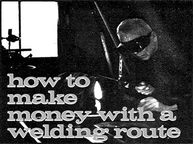

TOP: Henry Farr repairs a cracked jointer blade with his Solidox welding set. LEFT: An assortment of damaged articles awaits pick-up at a collection point. RIGHT: Accurate work means satisfied customers. Henry cleans an edge to get a better measurement.